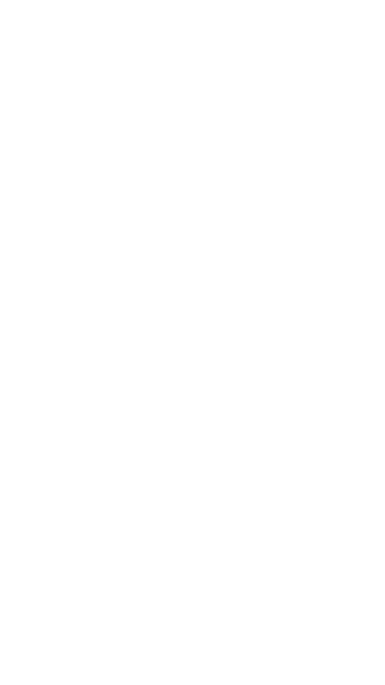

O mnie
Mam na imię Dawid Szostak, mam 15 lat,interesuję się programowaniem i lotnictwem,
jestem średnio zaawansowanym programistą.
Chodzę do drugiej klasy liceum, znam Pythona i C++
 Github
Github

Potrafię pisać całkiem zaawansowane programy, na przykład różne interfejsy graficzne, czy też backend za pomocą biblioteki Flask
Potrafię napisać podstawowy program w C++, skorzystać z biblioteki Qt, aby tworzyć interfejsy graficzne
Wiem, jak działają serwery, w tym te działające na linuxie, wiem jak stworzyć serwer, jak z niego korzystać, i jak nim zarządzać.
Potrafię działać i wykorzystywać sztuczną inteligencję (np. StabilityAI Stable Diffusion do tworzenia zdjęć, OpenAI Point-E do tworzenia modeli 3D) na własnym komputerze, a nie w chmurze.
Szybko się uczę i szybko zaczynam rozumieć różne rzeczy, potrafię się sam czegoś nauczyć, jeśli jest to potrzebne do ukończenia projektu.
Potrafię szybko diagnozować i rozwiązywać problemy, w tym efektywnie korzystać z serwisów takich jak Google i StackOverflow, aby pomóc w rozwiązaniu problemu
Potrafię korzystać z platformy GitHub, zarządzać różnymi repozytoriami, korzystać z Git CLI, zgłaszać błędy, używać innych platform takich jak Trello do tworzenia roadmapów.
Jestem bardzo dobry z języka angielskiego, piszę programy (tak jak się powinno) standardowo, w języku angielskim, umiem się efektywnie porozumiewać.
Mocno inspirowane filmem youtubera Tech With Tim — podstawa kodu i fizyka jest stworzona na podstawie jego filmu. Gra została jednak bardzo mocno zmodyfikowana - dodałem resztę planet układu słonecznego, przyspieszanie czasu, zoomowanie scrollem przesuwanie się myszką, i przede wszystkim tworzenie nowych planet, które w ciekawy sposób zmieniają trajektoria planet.
 Python 3.9
Python 3.9
 PyGame 2.1.2
PyGame 2.1.2
Początkowo stworzony w celu pomocy w tworzeniu bransoletek, ten program graficzny pozwala na zapisywanie i odczytywanie projektów, ma takie funkcje jak autozapis, wypełnianie, siatkę, odbijanie według osi symetrii. Był stworzony od zera za pomocą biblioteki PyQt5, cały projekt jest dostępny na platformie GitHub.
Python 3.9
Qt 5
Stworzona za pomocą biblioteki PySide6, wykorzystuje wbudowany widżet przeglądarki. Korzysta z tzw. pionowych kart, nie wyświetlają się one u góry przeglądarki jak zwykle, a wyświetlają się na jej boku. Korzysta z akrylicznego tła okna, wprowadzonego w Windowsie 10.
Python 3.10
Qt 6
Stworzona ręcznie przeze mnie, podczas tworzenia tej strony nauczyłem się wielu nowych właściwości z CSS'a, trochę JavaScripta i projektowania stron, i przede wszystkim TailwindCSS, technologii, która pozwala pominąć tworzenie klas CSS.
 HTML5
HTML5
 TailwindCSS
TailwindCSS